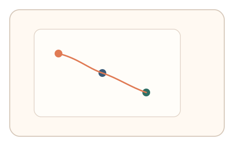
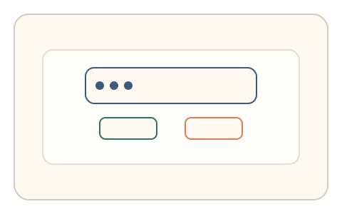
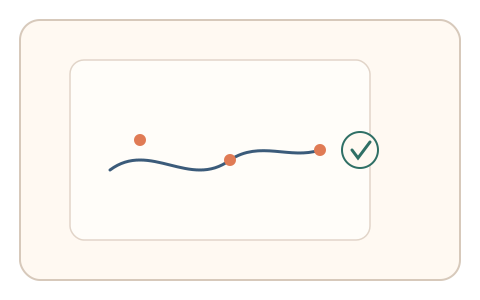

#118
Morphological Analysis - Combination Batches
已扩展
异步意图链
在主操作后分两次异步校验意图（选择 + 微路径），以任务内相对比较验证一致性。
概念原文
用户完成主操作后分两次异步校验其意图（选择 + 微路径），系统以任务内相对比较判定一致性。任务结构为异步验证，信号形态为注意力分布与搜索路径。
以“跨时意图链”降低一次性伪造。
研究背景
真实用户的意图会在短时内保持连续性，两次异步校验可形成“意图链”。脚本难以跨时保持一致的注意力分布与路径特征，从而提升在场验证强度。
核心机制
- 记录主操作期间的注意力与路径特征。
- 异步弹出第一次微选择校验。
- 稍后进行第二次微路径复核。
- 对两次校验与主操作进行相对比较。
用户流程
- 步骤 1：用户完成主操作并继续使用页面。
- 步骤 2：异步提示进行微选择。
- 步骤 3：再次异步提示复核微路径并判定。
判定信号
注意力分布一致性
真实用户的关注区域与意图存在连续性。
微路径相似度
跨时复核的路径相似度具有稳定区间。
判定逻辑
两次异步校验需与主操作保持合理一致性；完全不相关或过度完美判异常。
对抗面
- 脚本固定选择与路径模板
- 重放真实用户的意图链序列
防御与缓解
- 随机化异步时机与题目形式
- 绑定上下文状态与动态参数
- 叠加反应时与停顿信号
可达性与风险
提供可跳过或简化校验，避免频繁弹窗影响体验。
- 异步打断导致用户困扰
- 意图变化可能引发误判
可视化状态

状态 1：主操作
记录主操作的注意力与路径。

状态 2：异步选择
第一次异步微选择校验。

状态 3：异步路径
第二次异步微路径复核。
参考资料
Prospective memory
说明跨时意图保持与回忆机制。
Visual search
说明注意力分布与路径特征。